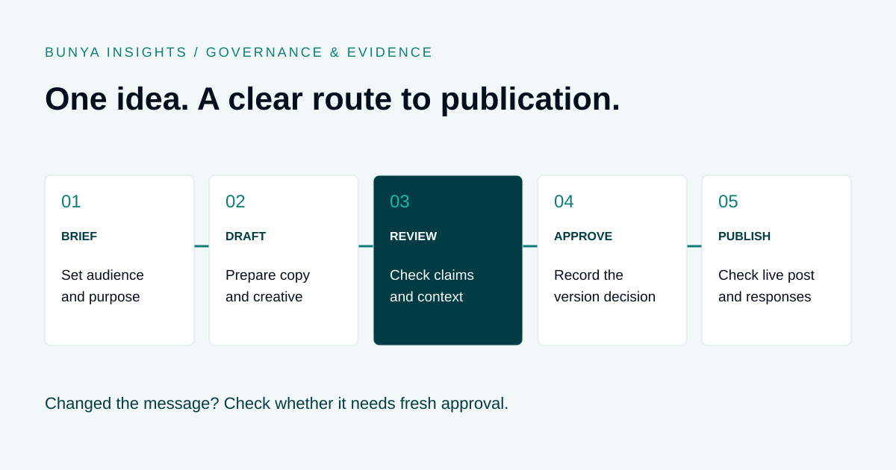

Governance & evidence
Social Media Approval Workflow for Financial Advice Firms
Take a useful idea through review, approval and publication with clear responsibility at every step.
THE SHORT ANSWER
A social media approval workflow gives each post an owner, an identifiable draft, a review route and an authorised publication decision. Check the full package, including visuals and links, keep approval tied to the version being published and assign responsibility for responses and corrections. AI can help prepare content; people remain responsible for review and approval.

Give every post a clear route to publication
A useful social media process makes it easy to answer three questions: which version are we reviewing, who can approve it and what is scheduled to go live? Without those answers, feedback gets scattered across messages and a last-minute edit can bypass the person responsible for review.
Start with a shared content record containing the audience, purpose, channel, proposed date, draft copy, creative and destination link. Keep comments and decisions with that record so the next person can see the context.
- Brief: define the intended audience, topic, purpose and source material.
- Draft: prepare the wording, visual and link for each channel.
- Review: check the complete post against the firm’s content and approval requirements.
- Approve: record the authorised decision against an identifiable version.
- Schedule and check: publish the approved version, confirm the live result and monitor responses.
Use your licensee’s requirements to decide which content needs which level of review. A workflow is an operational control; it does not establish that a post meets every legal requirement.
Separate the responsibilities
Small teams may combine roles, but responsibility should still be explicit. Set a backup approver and a process for urgent posts so a deadline does not become an informal approval rule.
| Role | Responsibility | Recorded outcome |
|---|---|---|
| Content owner | Prepare the brief and complete review package. | Draft version and supporting sources. |
| Reviewer | Check accuracy, presentation and issues requiring escalation. | Feedback and unresolved questions. |
| Authorised approver | Make the publication decision within the firm’s approval process. | Approved version, approver, date and conditions. |
| Publisher | Schedule the approved material and inspect the live post. | Channel, publication time and live reference. |
| Response owner | Monitor comments and enquiries and route issues. | Follow-up or escalation where needed. |
A practical pre-publication checklist
Review the package as the audience will see it, including the image, headline, caption and linked page. A correct caption does not fix an unsupported claim in the graphic.
- Purpose and audience: is it clear who the post is for and what the reader should do next?
- Claims: can factual statements, numbers, comparisons and outcome claims be supported by current sources?
- Context: are qualifications and limitations presented clearly alongside the message they relate to?
- Advice boundaries: does the topic need additional review under the firm’s authorisations and licensee policy?
- Identity: are the firm name, attribution and required disclosures correct for this material?
- Privacy and permissions: is any client story, image or testimonial authorised for the intended use?
- Presentation: are text, visual, link preview and landing page consistent, readable and accessible?
- Version and timing: is this the approved version, and will the information still be current on the scheduled date?
- Follow-up: who will monitor replies, handle enquiries and pause or correct the post if needed?
ASIC’s RG 234 advertising guidance is directed to promoters and publishers of financial products, financial advice services and credit advertising. Use the current guidance and your firm’s review requirements when assessing promotional content.
Use AI to prepare the draft, then check it
AI can help turn a source document or an adviser’s idea into suggested posts. Give it approved source material, the intended audience, the firm’s tone and the boundaries of the brief. Ask it to flag missing evidence rather than invent figures or client examples.
The review still needs to cover the result. Check whether the draft has exaggerated a benefit, removed a qualification or implied an outcome the source did not support. Repeat that check when generating a shorter caption or a different channel version.
Keep confidential client material out of unapproved tools. Agree which tools and inputs the firm permits, and make it clear in the content record when an example is fictional. Automated checks can support a reviewer, but should not be presented as a guarantee of compliance.
Worked example: an edit after approval
Illustrative example. A firm prepares a post inviting readers to a retirement-planning webinar. The reviewer approves a caption describing the topics covered and a graphic showing the date and booking link.
Before scheduling, someone changes the graphic to “Retire five years earlier”. That is a new outcome claim, even though the caption has not changed. The publisher returns the revised package for review instead of relying on the earlier approval.
The team removes the unsupported wording, confirms the event details and records approval of the updated version. After publication, the response owner checks the live post and booking link. The workflow preserves a clear connection between the decision and the content that actually appeared.
Keep approval connected to the published version
A comment saying “looks good” is difficult to interpret later if the content has since changed. Keep the approved text and creative, the approver’s decision, any conditions, the scheduled channel and the live publication reference together.
Define what counts as a change requiring fresh review. At a minimum, establish a clear escalation path for changed claims, figures, audience, imagery, links or context. Apply the firm’s policy to minor corrections rather than leaving the publisher to guess.
Agree retention and access arrangements with the people responsible for the firm’s obligations. If a post is corrected or withdrawn, record the reason and action taken. A content calendar alone may not preserve that history.
Make room for replies, corrections and delays
The process continues after scheduling. Assign someone to check that the right content went live, that the destination link works and that replies are being handled. Avoid discussing a person’s financial circumstances in a public comment thread; route an enquiry through the firm’s appropriate private process.
Have a practical way to pause scheduled content when an event changes or a source becomes outdated. Define who can authorise a correction, who contacts the reviewer and how the team records the resolution.
Measure useful operational indicators: time waiting for review, revision rounds, missed publication dates and enquiries requiring follow-up. Those measures can reveal process problems without assuming that posting more often produces better business results.
Where Broadcast HQ fits
Broadcast HQ brings campaign preparation, human review and scheduling into the Bunya operating system. The useful starting point is one real approval journey: an idea becomes a draft, the team checks it, an authorised person approves it and the approved content moves to the calendar.
Your Blueprint confirms supported channels, account access, review rules, integrations, licensing and costs. Ask to see how version changes, rejected drafts and failed publishing attempts are handled in the proposed scope.
Bring an example campaign brief to a demo and show who needs to review it. That makes the discussion more concrete than asking only whether the system can generate posts.
Common questions
Does every social media post need the same approval?
Your firm should define the review route by content type and risk, consistent with licensee requirements. Do not assume an educational label automatically removes the need for review.
Can AI approve financial advice marketing?
AI can assist with checking a draft against defined rules. The firm still needs an accountable approval process and appropriate escalation for matters requiring judgement.
Should we approve each channel version separately?
Review the actual material intended for each channel. Shortening a caption or changing a graphic can alter the message. Your process can group versions in one review package if each version is clearly identified.
What happens if a post changes after approval?
Apply the firm’s change policy. Return material changes for review and keep the new approval tied to the revised version before scheduling it.
Does an approval workflow make the content compliant?
No. It helps organise review and responsibility. The content itself still needs to meet applicable requirements, assessed by the appropriate people.
Sources and scope
ASIC RG 234: Advertising financial products and services (including credit), checked 20 September 2026. The workflow and checklist are practical suggestions to adapt to your firm, not legal advice or a prescribed compliance process.